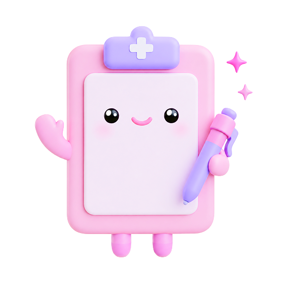
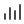

26년 8월 16일
김멋사님,
김멋사님,
좋은 아침이에요!

라운딩 기록
빠른 기록
유형을 눌러 간단하게 메모 할 수 있어요
오늘 기록 보기
기록 원문
가공되지 않은 원본 파일과 기록 내용을 확인할 수 있어요
✦
요약 정리본
검토 필요
기록을 토대로 AI가 정리한 내용을 볼 수 있어요
환자 지정 음성 메모
빠른 기록은 환자 식별이 먼저 필요하므로 모드 진입 전에 환자를 지정합니다.
환자와 유형을 선택한 뒤, 마이크를 눌러 빠른 상황 기록을 바로
남길 수 있습니다.
환자
환자 상세
타임라인
날짜별 환자의 인수인계 현황을 확인할 수 있어요
8월 첫째 주
일
7 월
8 화
9 수
10 목
11 금
12 토
13
7 월
8 화
9 수
10 목
11 금
12 토
13
라운딩 기록

×
09:15
녹음을 시작하고, 환자별 방문을 끝내면 서버 분석으로 STT·화자분리·환자 후보를 한 번에 확인합니다.
텍스트를 입력하세요..
현재 라운딩
IDLE
분석 후 검토
오늘 라운딩 기록
인수인계
오늘의 인수인계
라운딩 기록을 바탕으로 AI가 인수인계 초안을 작성해요
작성한 인수인계
Today
26.08.10 수요일
수신자 선택 안 됨
송신 전
26.08.09 화요일
수신자 이멋쟁 간호사
26.08.07 월요일
수신자 박사자 간호사
개발 연결 설정
파일 업로드 테스트
실제 라운딩 녹음과 빠른 기록 음성을 연결해서 현재 화면 흐름을 그대로 검증합니다.
라운딩
환자 방문 파일
선택한 파일은 방문 순서대로 자동 배치되고, 아래에서 환자별로 다시 연결할 수 있습니다.
빠른 기록
환자 지정 음성 메모
빠른 기록은 환자 식별이 먼저 필요하므로 업로드 전에 환자를 지정합니다.
요청
none{}
응답
idle{}